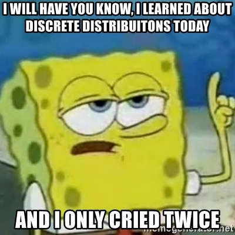

Lab 7: Discrete Distributions
Computer Lab 7
Tip
Run the R code cells directly in your browser. Use the quiz buttons for immediate feedback, then record your answers in eLC.
Introduction
In this lab you will explore The binomial and Poisson distributions.
The Binomial Distribution
The binomial distribution is used to describe dichotomous data. The probability density function describes the probability of any particular value being observed in terms of density. The binomial distribution is a two parameter distribution, which means two values (the number of trials and the probability of success) determine the shape of the distribution.
Visualizing Probability density
The data you collect is called binomial when there are only two possible outcomes (YES, NO). The data you collect is approximated by the binomial probability density function (pdf). The pdf function is \({\displaystyle {\binom {n}{x}}p^{x}(1-p)^{n-x}}\) and it describes the probability of any of the possible values (not necessarily observed). R has built in functions for all of the distributions that you will learn about this semester. To learn more check out the R tutorial page
Exercise 1: Binomial Distribution Plot
Instructions Run the code below to see the impact different parameter values have on the shape and position of the distributions. Use the plot to answers the quiz questions.
Quiz: Questions 1-3
Question 1
When the probability of success is small what happens to the peak of the distribution?
Question 2
Which summary statistic does the peak of the distribution represent?
Question 3
What are the parameters for the green distribution?
Exercise 2: Calculating Probabilities from Binomial Distribution
Instructions: Before selecting one of the calculations options move the sliders that change either the probability of success or the number of trials to see how the distribution changes. Then use the one of the appropriate calculation option to answer the quiz questions. (Hint: if you are having a hard time setting specific values with the slider. Click the slider and then use the arrow keys to increase or decrease the value)
How to calculate the different probabilities:
- To calculate \(P(X<x)\) set the lower bound to \(0\) and the upper bound to \(x-1\), for example with \(Bin(n=50,p=0.5)\) the \(P(X<22)=0.161118\) lower bound is set to 0 and the upper bound is set to \(21\) (\(22-1=21\)).
- To calculate \(P(X\leq x)\) set the lower bound to \(0\) and the upper bound to \(x\), for example with \(Bin(n=50,p=0.5)\) the \(P(X\leq22)=0.239944\) lower bound is set to 0 and the upper bound is set to \(22\).
- To calculate \(P(X=x)\) set both the lower bound and upper bound to the same value, for example with \(Bin(n=50,p=0.5)\) the \(P(X=22)=0.078826\) set the lower bound to \(22\) and the upper bound to \(22\).
- To calculate \(P(x1\leq \ X \leq x2)\) set the lower bound to \(x1\) and the upper bound to \(x2\), for example with \(Bin(n=50,p=0.5)\) the \(P(19\leq \ X \leq 22)=0.20749\) set the lower bound to \(19\) and the upper bound to \(22\).
NoteOriginal Shiny interface
This widget needs a browser-side replacement in WebR or JavaScript.
fluidRow(column(6, sliderInput("n", "Number of Trials", min = 10,
max = 1000, value = 50, step = 1)),
column(6, sliderInput("p", "Probability of Success", min = 0,
max = 1, value = 0.50, step = 0.01)),
column(3,
selectInput("selectBC", "Calculations",
choices = list("Calculate Probabilities" = 1,
"Calculate Percentiles" = 2,
"None"=3), selected =3)),
conditionalPanel(condition = "input.selectBC == 1",
fluidRow(
tagList(
tags$h5("Review the exercise instructions. You can check to see if you are doing it right with the examples."),
column(4, numericInput("a", "Lower Bound", min = 0,
max = 1000, value = NA, step = 1)),
column(4, numericInput("b", "Upper Bound", min = 0,
max = 1000, value = NA, step = 1))
))
),
conditionalPanel(condition = "input.selectBC == 2",
column(6,
tagList(
tags$h5("This returns the number of successes for the specified percentile"),
numericInput("quantile", "Percentile", min = 0,
max = 1, value = NA, step = 0.05)))
)
)
plotOutput("binplot")
NoteOriginal Shiny server logic
This code is retained for migration reference. The static replacement should run in the browser without a Shiny server.
# Code for the function addapted from Bret Larget
# From :http://pages.stat.wisc.edu/~larget/R/prob.R
gbinom = function(n, p, low=0, high=n,scale = F, a=NA,b=NA,calcProb=!all(is.na(c(a,b))),quantile=NA,calcQuant=!is.na(quantile))
{
sd = sqrt(n * p * (1 - p))
if(scale && (n > 10)) {
low = max(0, round(n * p - 4 * sd))
high = min(n, round(n * p + 4 * sd))
}
values = low:high
probs = dbinom(values, n, p)
plot(c(low,high), c(0,max(probs)), type = "n", xlab = "Possible Number of Successes",
ylab = "Probability",
main = paste("Binomial Distribution \n", "n =", n, ", p =", p))
lines(values, probs, type = "h", col = 2)
abline(h=0,col=3)
if(calcProb) {
if(is.na(a))
a = 0
if(is.na(b))
b = n
if(a > b) {
d = a
a = b
b = d
}
a = round(a)
b = round(b)
prob = pbinom(b,n,p) - pbinom(a-1,n,p)
title(paste("P(",a," <= X <= ",b,") = ",round(prob,6),sep=""),line=0,col.main=4)
u = seq(max(c(a,low)),min(c(b,high)),by=ifelse( max(c(a,low))<min(c(b,high)), 1, -1))
v = dbinom(u,n,p)
lines(u,v,type="h",col=4)
}
else if(calcQuant==T) {
if(quantile < 0 || quantile > 1)
stop("quantile must be between 0 and 1")
x = qbinom(quantile,n,p)
title(paste("The ",quantile," percentile = ",x,sep=""),line=0,col.main=4)
u = 0:x
v = dbinom(u,n,p)
lines(u,v,type="h",col=4)
}
return(invisible())
}
output$binplot<-renderPlot({
if(input$selectBC==1){
gbinom(n=input$n, p=input$p, a=input$a, b=input$b, scale = T)
}
if(input$selectBC==2){
gbinom(n=input$n, p=input$p, quantile=input$quantile, scale = T)
}
if(input$selectBC==3){
gbinom(n=input$n, p=input$p, scale = F)
}
})Quiz: Questions 4-6
Instructions: Select “Calculate Probabilities” to answer questions about probability. The “Calculate Percentiles” option will be used in future labs
Relevant information for the questions below: The prevalence of black lung disease in the general population of coal miners is p=0.17.Question 1
What is the probability that 103 or fewer of 600 coal miners will have black lung?
Question 2
What is the probability that exactly 96 of 600 coal miners will have black lung?
Question 3
What is the probability that between 70 to 96 of 600 coal miners will have black lung?
The Poisson Distribution
The Poisson distribution is used to describe count data over a specific area or time period. The probability density function describes the probability of any particular value being observed in terms of density (also known as probability) . The Poisson distribution is a one parameter distribution, which means one value lambda (\(\lambda\)) determines the shape of the distribution. In the case of the Poisson distribution \(\lambda\) is both the mean (measure of center), variance (measure of spread), and one of the modes (measure of center). \(Lambda\) is often described as a rate (Number of Occurrences/time period), so the birth rate in a hospital could be described as 1.5 per hour. So the distribution shape would be described using the following notation \(Pois(\lambda=1.5)\).
Visualizing Probability density
Poisson counts can only be positive integers defined by a time period or specific area. For example the number of parking citations in a month, or the number of parking citations in a month in Athens. The definition of area is not restricted to geographic definitions. The number of parasites on a single honey bee is also a Poisson count with the area being defined as the body of a single honey bee.
The count data you collect is approximated by the Poisson probability density function (pdf). The pdf function is \(P\left( x \right) = \frac{{e^{ - \lambda } \lambda ^x }}{{x!}}\) and it describes the probability of any of the possible values (not necessarily observed). R has built in functions for all of the distributions that you will learn about this semester.
Exercise 3: Poisson Distribution Plot
Instructions Run the code and look at the impact of different lambda values.
Quiz: Questions 7-9
Question 1
When \(\lambda\) is small what happens to the peak of the distribution? (select all that apply)
Select all correct answers.
Question 2
Which summary statistics do the peaks of the distribution represent? (select all that apply)
Select all correct answers.
Question 3
What notation describes the blue distribution?
Exercise 4: Calculating Probabilities from Poisson Distribution
Instructions: Before selecting one of the calculations options move the slider that changes lambda (\(\lambda\)) to see how the distribution changes. Then use the appropriate calculation option to answer the quiz questions. (Hint: if you are having a hard time setting specific values with the slider. Click the slider and then use the arrow keys to increase or decrease the value)
How to calculate the different probabilities:
- To calculate \(P(X<x)\) set the lower bound to \(0\) and the upper bound to \(x-1\), for example with \(Pois(\lambda=1.5)\) the \(P(X<2)=0.557825\) lower bound is set to \(0\) and the upper bound is set to \(1\) (\(2-1=1\)).
- To calculate \(P(X\leq x)\) set the lower bound to \(0\) and the upper bound to \(x\), for example with \(Pois(\lambda=1.5)\) the \(P(X\leq2)=0.808847\) lower bound is set to \(0\) and the upper bound is set to \(2\).
- To calculate \(P(X=x)\) set both the lower bound and upper bound to the same value, for example with \(Pois(\lambda=1.5)\) the \(P(X=2)=0.251021\) set the lower bound to \(2\) and the upper bound to \(2\).
- To calculate \(P(x1\leq \ X \leq x2)\) set the lower bound to \(x1\) and the upper bound to \(x2\), for example with \(Pois(\lambda=1.5)\) the \(P(1\leq \ X \leq 2)=0.585717\) set the lower bound to \(1\) and the upper bound to \(2\).
NoteOriginal Shiny interface
This widget needs a browser-side replacement in WebR or JavaScript.
fluidRow(
column(12, sliderInput("mu", label= "Specify lambda:", min = 0,
max = 20, value = 1.5, step = 0.01)),
column(3, selectInput("selectPC", "Calculations",
choices = list("Calculate Probabilities" = 1,
"Calculate Percentiles" = 2,
"None"=3), selected =3)),
conditionalPanel(condition = "input.selectPC == 1",
fluidRow(
tagList(
tags$h5("Review the exercise instructions. You can check to see if you are doing it right with the examples."),
column(4, numericInput("aP", "Lower Bound", min = 0,
max = 1000, value = NA, step = 1)),
column(4, numericInput("bP", "Upper Bound", min = 0,
max = 1000, value = NA, step = 1))
))
),
conditionalPanel(condition = "input.selectPC == 2",
column(6,
tagList(
tags$h5("This returns the number of successes for the specified percentile"),
numericInput("quantileP", "Percentile", min = 0,
max = 1, value = NA, step = 0.05)))
)
)
plotOutput("poisplot")
NoteOriginal Shiny server logic
This code is retained for migration reference. The static replacement should run in the browser without a Shiny server.
# Code for the function addapted from Bret Larget
# From :http://pages.stat.wisc.edu/~larget/R/prob.R
gpois = function(mu, a=NA,b=NA,calcProb=(!is.na(a) | !is.na(b)),quantileP=NA,calcQuant=!is.na(quantileP))
{
sd = sqrt(mu)
low = max(0, round(mu - 3 * sd))
high = round(mu + 5 * sd)
values = low:high
probs = dpois(values, mu)
plot(c(low,high), c(0,max(probs)), type = "n", xlab = "observable values",
ylab = "Probability",
main =substitute(paste("Poisson Distribution with ",lambda==m), list(m=mu)))
lines(values, probs, type = "h", col = 2)
abline(h=0,col=3)
if(calcProb) {
if(is.na(a)){ a = 0 }
if(is.na(b)){
a = round(a)
prob = 1-ppois(a-1,mu)
title(paste("P(",a," <= Y ) = ",round(prob,6),sep=""),line=0,col.main=4)
u = seq(max(c(a,low)),high,by=ifelse(max(c(a,low))<high, 1, -1))
}
else {
if(a > b) {d = a; a = b; b = d;}
a = round(a); b = round(b)
prob = ppois(b,mu) - ppois(a-1,mu)
title(paste("P(",a," <= X <= ",b,") = ",round(prob,6),sep=""),line=0,col.main=4)
u = seq(max(c(a,low)),min(c(b,high)),by=ifelse(max(c(a,low))<min(c(b,high)), 1, -1))
}
v = dpois(u,mu)
lines(u,v,type="h",col=4)
}
else if(calcQuant==T) {
if(quantileP < 0 || quantileP > 1)
stop("Percentile must be between 0 and 1")
x = qpois(quantileP,mu)
title(paste("The ",quantileP," percentile = ",x,sep=""),line=0,col.main=4)
u = 0:x
v = dpois(u,mu)
lines(u,v,type="h",col=4)
}
return(invisible())
}
output$poisplot<-renderPlot({
if(input$selectPC==1){
gpois(mu=input$mu, a=input$aP, b=input$bP)
}
if(input$selectPC==2){
gpois(mu=input$mu, quantile=input$quantileP)
}
if(input$selectPC==3){
gpois(mu=input$mu)
}
})Quiz: Questions 10-12
Instructions: Select “Calculate Probabilities” to answer questions about probability. The “Calculate Percentiles” option will be used in future labs
Relevant information for the questions below: The average rate of car accidents in Athens is 2.6 per day.Question 1
What is the probability that 1 or fewer car accidents occur in a day?
Question 2
What is the probability that exactly 4 car accidents occur in a day?
Question 3
What is the probability that between 4 to 6 car accidents occur in a day?
Summary
In this lab, you completed 4 exercises and answered 12 quiz questions.
The lab covered 2 topics:
- The Binomial Distribution
- The Poisson Distribution
You are done with lab now you can binge a new show on Netflix! Don’t forget to record your answers and take the eLC quiz to get credit
